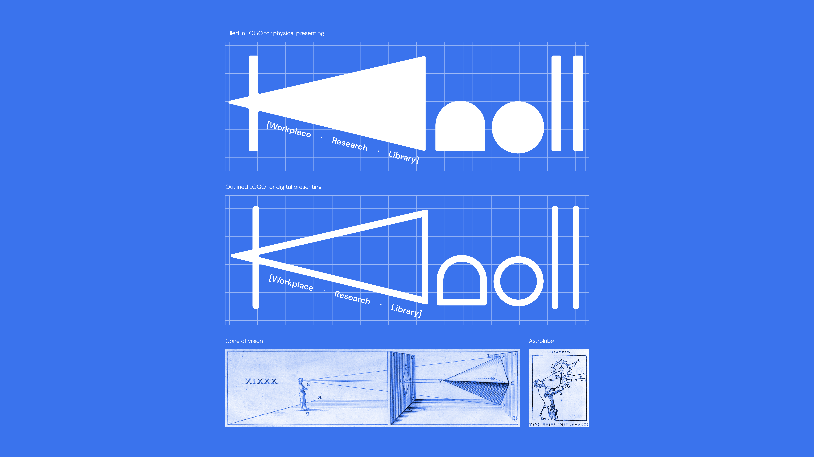
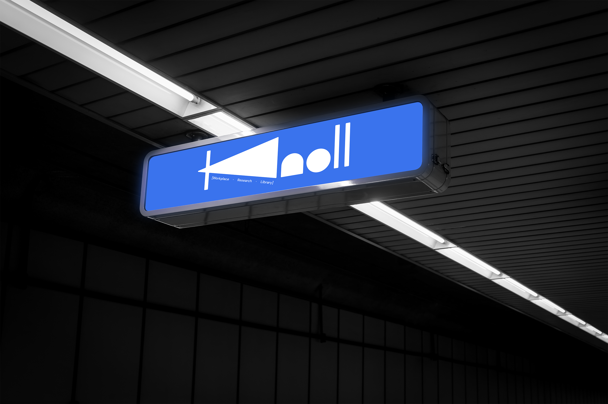
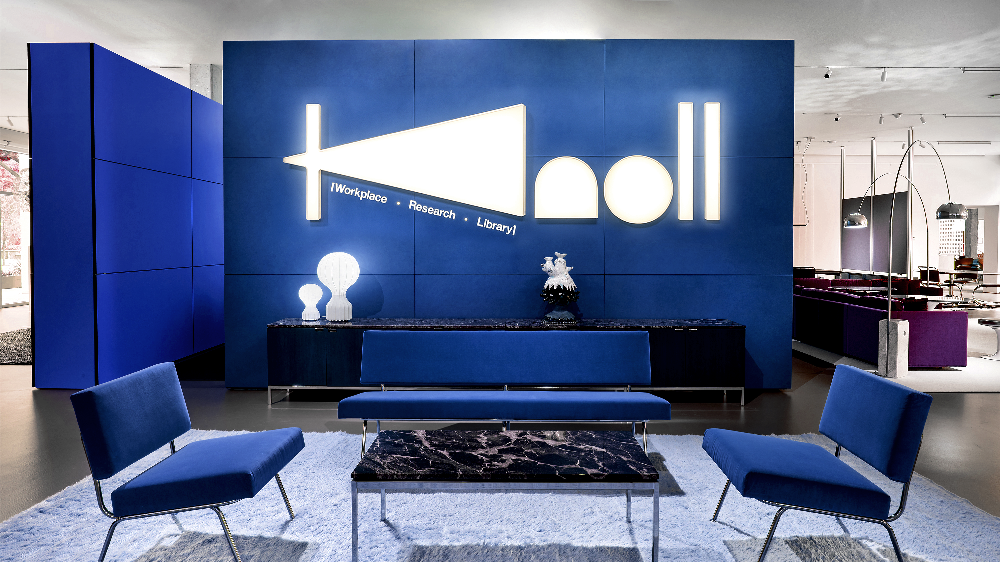
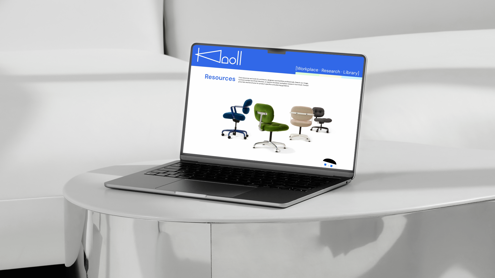
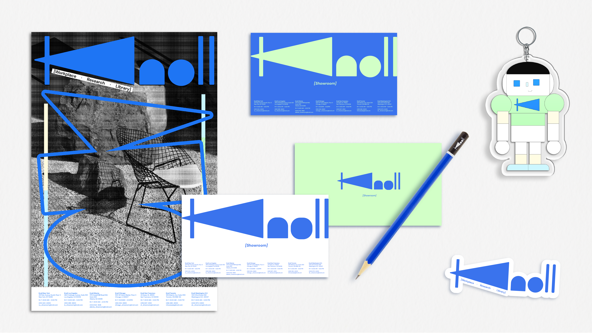
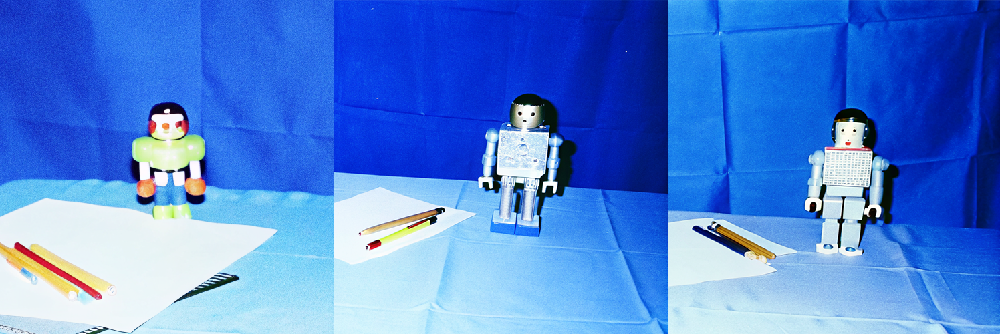

Brand Identity / Motion Graphics / Website Design / Character Rigging
Spring 2025
This project reimagines the identity of the Knoll Workplace Research Library as a more forward-looking research platform while staying connected to the main Knoll brand. The logo draws from two ideas: the cone of vision, representing designers observing and learning from real environments, and the astrolabe, a symbol of exploration and analytical research. These elements merge to form the “K” mark. A slightly more tech-oriented color palette was introduced to signal innovation, while retaining blue—the complement to Knoll’s signature orange — to maintain a visual link to the parent brand.





A key focus of the project was improving the user experience of the website. The original platform contained valuable resources for designers and architects but was difficult to navigate. I reorganized the entire system into three clear categories — Workplace, Research, and Library — to simplify navigation and make content easier to access. This structure allows users to quickly move between spatial references, research materials, and free media assets, turning the site into a more intuitive research platform.

To make the platform more approachable, I designed a robotic mascot called Knolly to function as an interactive guide. The character was initially generated using the Recraft AI model and then refined through my own design iterations. Inspired by Knoll’s legacy of innovation in design and research, Knolly’s robotic form reflects a forward-looking identity while its playful personality introduces warmth to the modernist brand. I rigged the character and animated it in After Effects so it could guide users through the website experience.

